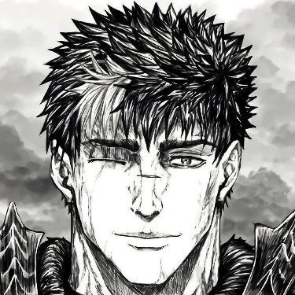

Берсерк — это легендарная история, ставшая символом мрачного фэнтези. Главный герой, наёмник по имени Гатс, сражается против судьбы, богов и самого мира. Сюжет исследует силу воли, цену мести и борьбу с внутренними демонами. Студии: OLM (1997), GEMBA (2016). Страна: Япония. Темы и атмосфера: жестокость, судьба, философия жизни и одиночество. Источник: https://jutsu-berserk.ru
Гатс — главный герой, воин с гигантским мечом, символ силы и боли. Гриффит — лидер отряда «Соколов», гений, одержимый мечтой о власти и идеале. Каска — единственная женщина-воин в отряде, близкая соратница Гатса и Гриффита. Пак — эльф-компаньон Гатса, источник иронии и эмоциональной поддержки. Ширке — юная ведьма, помогающая Гатсу управлять яростью. Серпико — преданный воин, верный спутник Фарнезе. Фарнезе де Вандимайон — дворянка, ищущая смысл в мире фанатизма. Исидро — юный авантюрист, вдохновлённый Гатсом. Скелетон-Рыцарь — таинственный спаситель, наблюдающий за судьбой мира. Зодд — бессмертный демон-воин, символ хаоса и боевой страсти. Фемто — новая форма Гриффита, апофеоз его эго и гибели человечности. Бехелит — мистический артефакт, открывающий врата к демонам и проклятиям. Источник: https://jutsu-berserk.ru